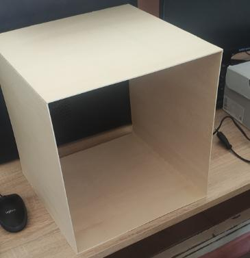
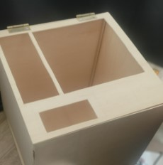

Cómo montar una Máquina Expendedora con Arduino.
Para empezar el montaje, hay que unir 4 tablas de madera para hacer una caja con la pistola de silicona.
Para poner las puertas, tenemos que utilizar bisagras para que se puedan abrir y cerrar fácilmente. Utilizaremos 2 bisagras por puerta. Para colocar los tornillos, podemos utilizar un pincho o un destornillador eléctrico, ya que la madera es muy fina y los agujeros se pueden hacer fácilmente.
Es necesario hacer huecos para que todos los componentes puedan ser accesibles desde el circuito interno. Tenemos que hacer huecos para los siguientes componentes:
Keypad, LCD, Fuente de Alimentación, Hueco de recogida del artículo y Ventana.
Para realizar el montaje del circuito, es necesario examinar cuidadosamente el diagrama que muestra la disposición de los conectores de pines. Este paso inicial es fundamental, ya que nos permitirá comprender exactamente cómo se deben interconectar los componentes para un funcionamiento óptimo y seguro del circuito. Al analizar cuidadosamente el diagrama, podremos determinar la ubicación precisa de cada conector, lo que nos guiará en el proceso de conectar los diferentes elementos de manera correcta y precisa. Por lo tanto, es importante invertir el tiempo necesario en investigar y comprender los diagramas de pinout, ya que son fundamentales para asegurar el éxito del montaje del circuito y evitar posibles errores o mal funcionamiento.
Diagrama:
En el diagrama, podemos observar que los pines que transmiten señal están conectados desde el componente hasta el controlador Arduino. Además, todos los voltajes y pines de tierra están conectados al protoboard para recibir alimentación de la fuente de energía.
Para perfeccionar la máquina expendedora, puedes reforzar las esquinas mediante el uso de refuerzos adicionales. También puedes considerar agregar un cristal en la ventana para una mayor visibilidad de los productos. Es recomendable ocultar los cables detrás de paredes o conductos para lograr un aspecto más limpio y ordenado. Asimismo, puedes utilizar sujetadores tipo velcro para mantener las puertas bien ajustadas. Estos detalles adicionales contribuirán a mejorar tanto la estética como la funcionalidad de la máquina.